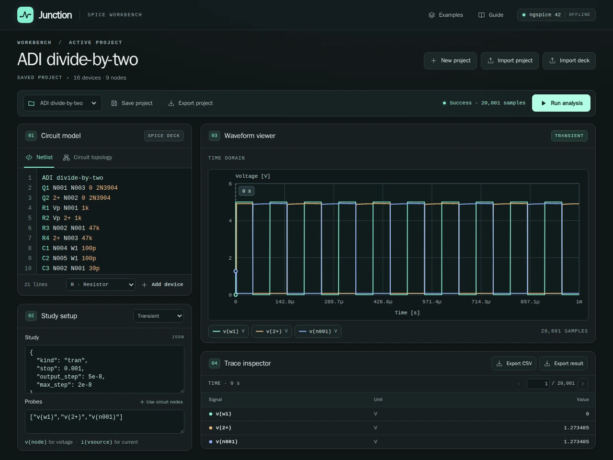

题目要求
交付可离线运行的开源应用，支持创建或导入 SPICE 网表、查看和重接拓扑、配置分析与探针、查看带单位的结果和波形。项目能保存、重开、重算并导出 JSON 与 CSV，命令行和网页共用求解引擎。

交付可离线运行的开源应用，支持创建或导入 SPICE 网表、查看和重接拓扑、配置分析与探针、查看带单位的结果和波形。项目能保存、重开、重算并导出 JSON 与 CSV，命令行和网页共用求解引擎。
覆盖 OP、DC、复数 AC 和瞬态分析。器件包括 R/C/L、独立与线性受控源、二极管和三端 NPN Gummel–Poon 晶体管；新电路必须保留 Early 效应、结电容及电荷存储等已声明参数。
以 LTspice 26.1.1 原生结果对照，ngspice 用于交叉核验。各工程的指定分析和浏览器流程全部通过才计通过。ADI 分频器分别检验互补稳态电平和阈值翻转时刻，并依据 LTspice 步长细化结果校准容差。
# Build a transistor-level SPICE workbench
Build a local, open-source web application for circuit modeling and simulation. It must import or create a circuit, edit its connections and values, run studies, display waveforms, and reopen projects. The app must run in Chromium without an internet connection.
## C1. Model and analysis coverage
`/app/data/projects` contains project requests derived from the public ngspice projects in `/app/data/originals`. The conversion changes only analysis metadata and equivalent SPICE spelling. `/app/data/CONTRACT.md` defines the exchange format and numerical tolerances.
- Bridge-T filter. Loaded passive network and complex AC response.
- BJT differential pair. DC bias, current mirror, differential DC sweep and small-signal AC about the bias.
- RCA3040 amplifier. Multistage OP, DC, AC and transient with Early effect, base series resistance, depletion capacitance, transit time and delayed SIN.
- Schmitt trigger. Hysteretic switching with finite-edge PULSE, dynamic capacitance and charge storage.
- Cascaded RTL inverters. DC transfer, saturation and transient storage through cascaded stages.
Support the demonstrated combinations of R, C, L, V, I, linear E/G, D and three-terminal NPN Gummel–Poon Q. Preserve the parameters in the supplied models, including reverse gain, Early voltage, base and collector resistance, junction capacitances and forward/reverse transit times. Generalize to other values, node names and topologies using the same grammar. For invalid or unsupported data, singular or floating circuits and nonconvergence, return a diagnostic and no successful traces.
You may implement a solver or use the provided open-source ngspice engine. Disclose the engine and version. Deliver an application with your own editing, study setup, validation, result presentation and project handling. A command wrapper, hardcoded answer cache, proprietary dependency or remote solver is outside the scope.
## C2. Web workflow
Provide the following accessible control names so the same Chromium workflow can test different implementations.
- `New project`, file inputs `Import project` for project JSON and `Import deck` for SPICE, editable `Model` and `Circuit topology` view. Support creating a working circuit in an empty editor and inserting, deleting or reconnecting devices. Show the current topology with devices and terminal nodes after edits.
- Editable `Study` and `Probes` text fields containing JSON. `Run analysis` solves the edited project. `Run status` communicates success, failure and stale results. `Result table` shows trace labels and units. `Result plot` shows swept, frequency or time-domain traces. For AC, make magnitude and phase available alongside real and imaginary data.
- `Save project` persists the editable project. The `Saved projects` dropdown lets users reopen it on the same origin after a page reload. `Export project` downloads the current JSON request. `Export result` downloads the batch-format JSON. `Export CSV` exports one row per sample, including units in headers. Disable result exports when the selected project has changed since the last success.
## C3. Delivery
Place the complete source and deliverables under `/app/output`. Include `README.md` with startup, usage, supported grammar and limitations, `LICENSE`, and `dependencies.lock` recording pinned runtime dependencies. The app must launch from a fresh copy with `bash /app/output/launch.sh --host 127.0.0.1 --port PORT`. The batch entry is `bash /app/output/simulate.sh REQUEST.json RESULT.json`. Both use the same engine and work offline. Submit regular files and directories without links, at most 6,000 entries and 128 MB total. Verification uses numerical tests, browser workflows and delivery checks. All mandatory checks must pass for reward 1.
原题 24/24 的 Harbor reward 为 1，版本为 replay-sol62-r16-clean-001。新增公开工程复测以工程为单位，结果为 4/8（50%），其中四个工程分别在 DC 或瞬态精度上失分。
| 公开工程 | 结果 | 验收发现 |
|---|---|---|
| ngspice diffpair | 未通过 | OP、AC 通过；差分 DC 扫描偏差达到容差 1.63 倍。 |
| ngspice RCA3040 | 未通过 | OP、AC 与瞬态通过；DC 扫描达到容差 1.67 倍。 |
| ngspice Schmitt | 未通过 | 一处瞬态采样超限，最大绝对误差 0.359 mV。 |
| ngspice 级联 RTL | 未通过 | 瞬态通过；DC 最大误差约 3.545 mV。 |
| ngspice PZT 网络 | 通过 | 宽频带复电压响应通过。 |
| Xyce 双二极管限幅 | 通过 | 结电荷与驱动电流瞬态通过。 |
| Xyce BJT 电荷斜坡 | 通过 | Gummel–Poon 存储电荷斜坡对齐。 |
| Analog Devices 双稳态二分频 | 通过 | 对自包含等价网表，互补电平及翻转时序通过。 |